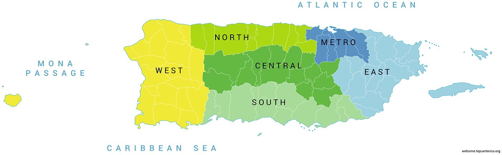

Region Facts:
Towns that make up this region: Arecibo, Barceloneta, Camuy, Dorado, Hatillo, Manatí, Toa Alta, Vega Alta, and Vega Baja.
Distance from SJU airport: 1 hour
Distance from Aguadilla (BQN) airport: 1.5-2 hours
Experience
In the north and west regions the best seafood restaurants can be found, what makes these sea food restaurants different to many others is that fishermen usually catch the fish that is served that day. This region is known for its great fishing year round, its proximity to the capital makes it very accessible for tourist wishing to have this experience. One of the most recognized restaurants in that region is called Kikita’s Beach House which is a hotel which has a restaurant, all the fish served in that restaurant are fished locally and daily. The fact that this restaurant is located in so close to the coast, the waves crash under you as you dine giving visitors an unique experience while dining. There are many more restaurants such as this one such as Playa Brava and Salitre which are also seaside restaurants that offer a unique experience to their customers. To the right is an image of Kikita's Beach House & Restaurant.
Key locations
This region also offers many unique locations such as the Cavernas de Camuy (Camuy Caves) which are the one of the largest cave systems in the Carribean with an estimated 10 miles of cave systems. Early tales suggest that it is home to one of the world’s fountains of youth. This region is also home to Rincon which has some of the best beaches to surf in the world, the surfing world championship is occasionally hosted in Rincon every four to six years. It is also home to the hyper luxurious Dorado Beach resort which hosts the only natural pool on the island, making it a very nice place to gather as a family to spend the day by the beach. This region also offers the largest pink beach in the Caribbean called Playa Sucia (Dirty Beach) which is next to Puerto Rico’s salt flats, this makes the beach appear pink and the water crystal clear. The region also offers a desert which is called El Bosque Seco de Guanica (Dry Forest of Guanica) this is a unique locations as there are not many found in the Caribbean allowing tourists to enjoy from riding the sand dunes with a buggy to enjoying the nature at the reserve. To the left is a photo of the highest part of the Cavernas de Camuy Caves.